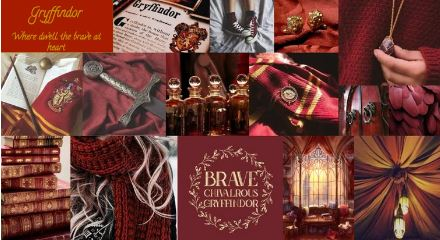
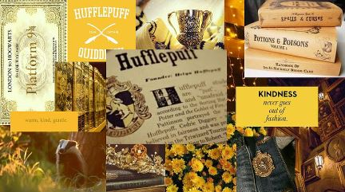
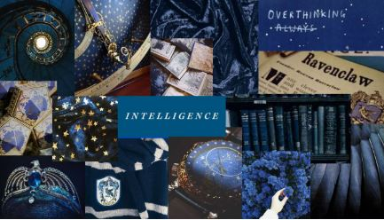
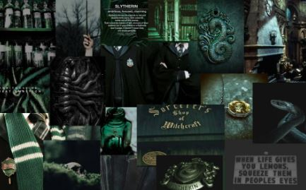

If you wanna see the result click here...
100 to 150 : Gryffindor
151 to 200 : Hufflepuff
201 to 250 : Ravenclaw
251 to 300 : Slytherin

Gryffindor
Gryffindors are known for their...
courage, bravery, and chivalry. They are the fearless warriors of Hogwarts, always ready to stand up for what they believe in, even in the face of adversity. Their boldness often inspires those around them, making them natural leaders. Gryffindors possess an unwavering sense of justice, which drives them to fight against oppression and protect the vulnerable. This house celebrates those who dare to take risks, embodying the spirit of adventure.
However, while their bravery is commendable, it can also lead to recklessness. Gryffindors may sometimes act impulsively without considering the consequences of their actions. This tendency can put them and others in precarious situations. Additionally, their strong desire to prove themselves can sometimes manifest as a need for validation, leading to conflicts with peers who may not share the same fervor. It’s essential for Gryffindors to remember that true courage also involves wisdom and patience.
In conclusion, Gryffindors are the champions of valor and bravery. They should harness their courage while being mindful of their impulsive tendencies. By balancing their boldness with thoughtful consideration, they can truly become the heroes they aspire to be.

Hufflepuffs
Hufflepuffs are characterized by their...
dedication, loyalty, and hard work. They are the heart of Hogwarts, always willing to lend a helping hand to those in need. Their inclusive nature fosters a sense of community and belonging among their peers. Hufflepuffs are known for their patience and reliability; they often go above and beyond to ensure that everyone feels valued and supported. Their strong work ethic means that they are often underestimated but consistently deliver exceptional results.
Nonetheless, Hufflepuffs can sometimes struggle with assertiveness. Their desire to maintain harmony may lead them to avoid confrontation, which can result in them being overlooked or taken for granted. They may also feel pressure to please others at the expense of their own needs and desires. It’s crucial for Hufflepuffs to recognize their worth and advocate for themselves when necessary.
In summary, Hufflepuffs embody kindness and perseverance. By embracing their strengths while learning to assert themselves more confidently, they can become powerful allies and advocates for both themselves and others.

Ravenclaw
Ravenclaws are celebrated for their ...
intelligence, creativity, and thirst for knowledge. They are the thinkers and innovators of Hogwarts, always seeking to understand the world around them. Their analytical minds allow them to approach problems from unique perspectives, often leading to groundbreaking ideas and solutions. Ravenclaws value learning above all else and thrive in environments that challenge their intellect. Their curiosity drives them to explore new subjects and push the boundaries of conventional wisdom.
However, this relentless pursuit of knowledge can sometimes lead to a sense of elitism. Ravenclaws may unintentionally alienate those who do not share their intellectual interests or abilities. Additionally, their tendency to overthink can result in indecision or anxiety when faced with choices. It’s important for Ravenclaws to remember that collaboration with others can enhance their learning experience and foster deeper connections.
In conclusion, Ravenclaws are the torchbearers of intellect and creativity. By balancing their love for knowledge with openness to diverse perspectives, they can cultivate enriching relationships while continuing to expand their horizons.

Slytherin
Slytherins are known for their ...
mbition, cunning, and resourcefulness. this ambition can sometimes veer into manipulativeness or ruthlessness. Slytherins may prioritize their goals over ethical considerations, leading to conflicts with others who value integrity and fairness. Additionally, their competitive nature can create an environment of distrust among peers. It is vital for Slytherins to recognize the importance of collaboration and empathy in achieving long-term success.
However, this relentless pursuit of knowledge can sometimes lead to a sense of elitism. Ravenclaws may unintentionally alienate those who do not share their intellectual interests or abilities. Additionally, their tendency to overthink can result in indecision or anxiety when faced with choices. It’s important for Ravenclaws to remember that collaboration with others can enhance their learning experience and foster deeper connections.
In summary, Slytherins embody ambition and strategic thinking. By channeling their drive ethically and fostering genuine connections with others, they can become powerful leaders who inspire rather than intimidate.